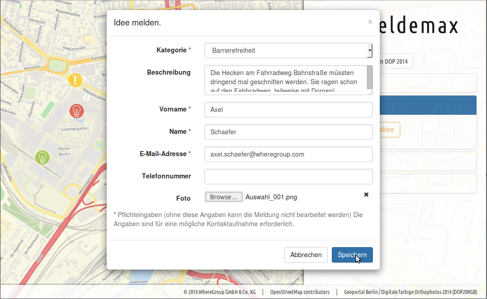
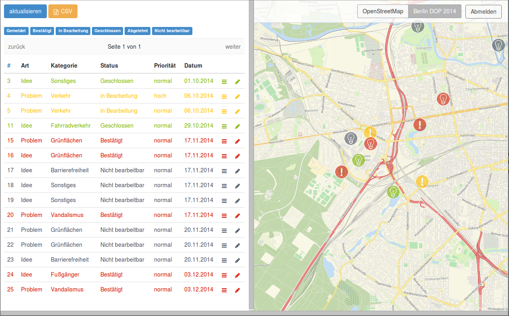
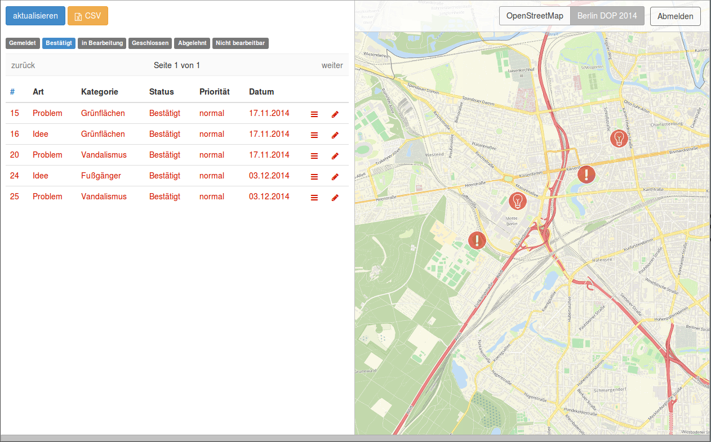
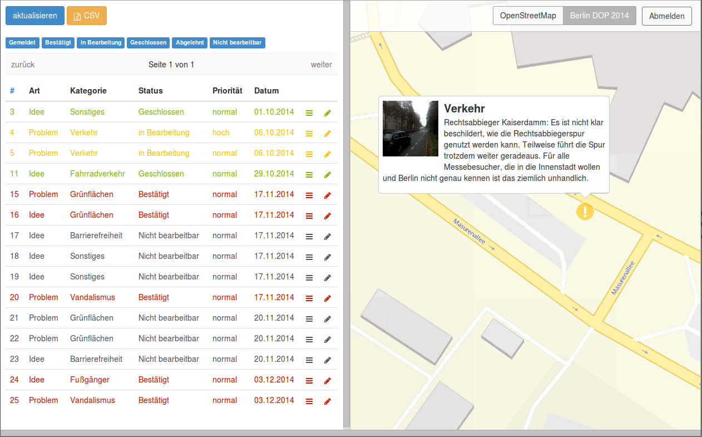
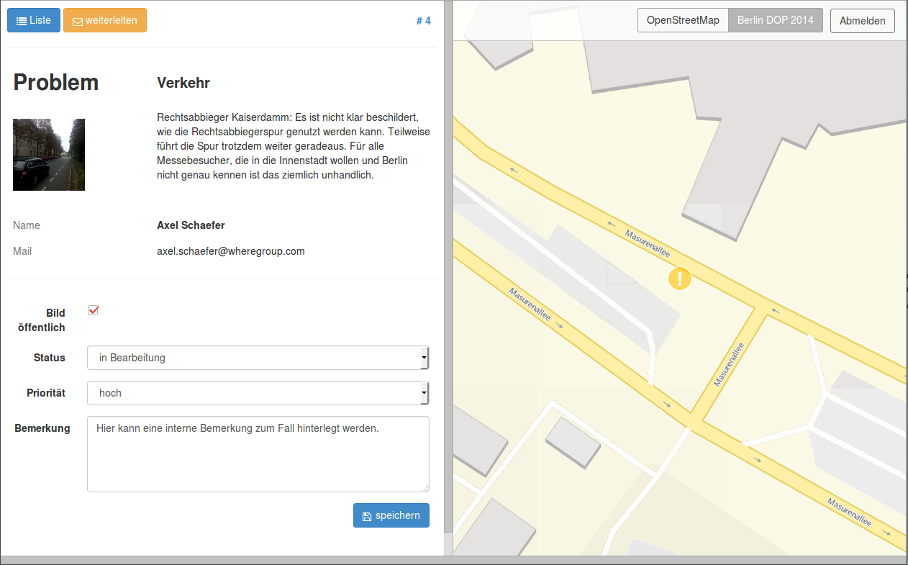
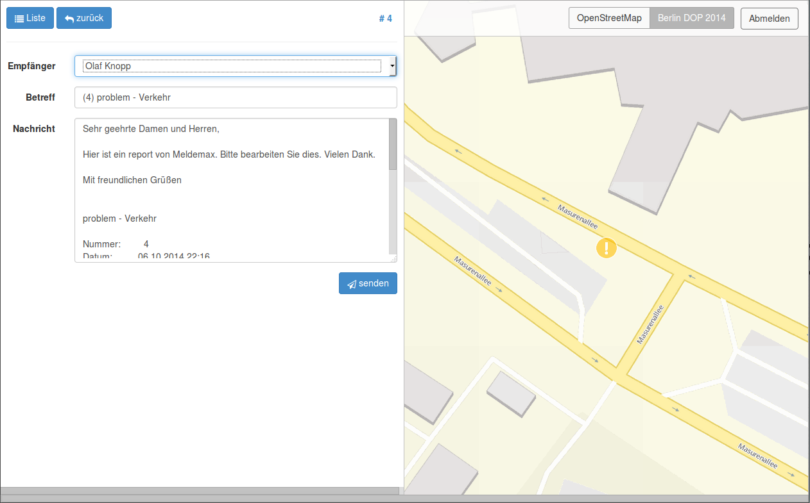
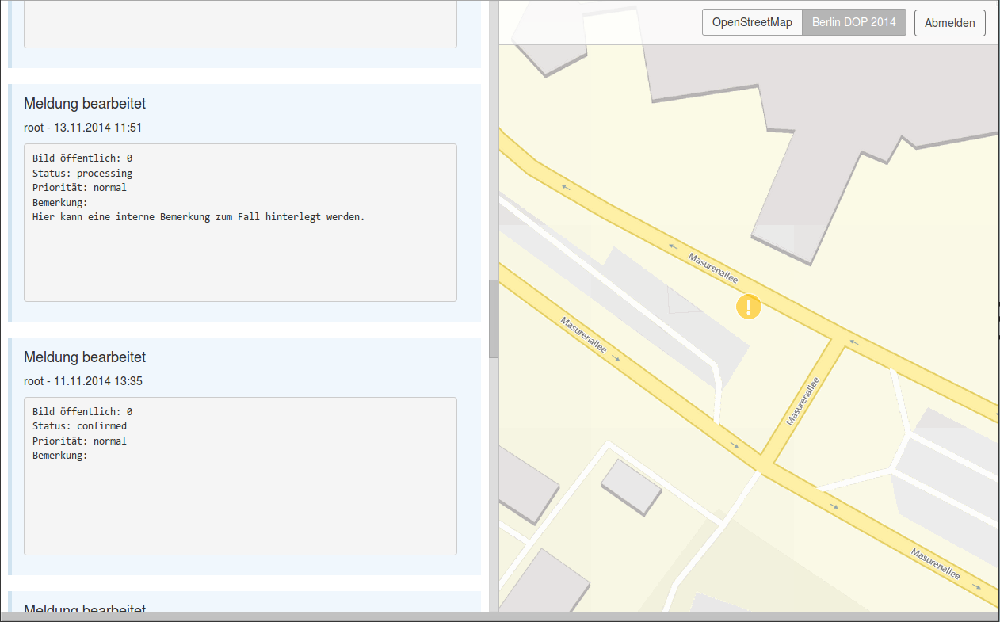

Bürgerbeteiligung leicht gemacht
Inhalt
Bürgerbeteiligung
Bürgerinnen und Bürger haben zunehmend Interesse daran, sich über Vorgänge und Entscheidungen innerhalb der Verwaltungen zu informieren und selbst Vorschläge und Eingaben zu machen.
Wichtige Werkzeug dafür sind leicht bedienbare, webbasierte Systeme, mit denen Bürger unkompliziert Kontakt zur Verwaltung aufnehmen können.
Wohnumfeld
Das Wohnumfeld ist einer der wichtigsten Faktoren für Lebensqualität...
...und einer der wenigen, auf die die Verwaltung direkten Einfluß nehmen kann.
Attraktives Wohnumfeld = Standortvorteil
Wohnumfeld: Ärgernisse
- Defekte und Störungen
- Barrierefreiheit...
- Müll und Unrat
- Grünflächen und Spielplätze
- ...
Wohnumfeld: Ideen und Vorschläge
- Verkehr und ÖPNV
- Gestaltung und Anlagen
- Veranstaltungen und Einrichtungen
- ...
Meldemax
Ein Online-Portal zur Gestaltung des öffentlichen Raums.
Bürger können auf einer interaktiven Karte Probleme im Stadtbild oder Ideen zur Stadtentwicklung direkt an die Verwaltung melden.
Die Meldungen werden zur Bearbeitung automatisch den jeweils Zuständigen der kommunalen Verwaltung zugeordnet.
Im Verlauf des Prozesses können Bürger sich anhand der Karte über den Sachstand informieren.
Meldemax
Einfacher Einstieg und einfache Bedienung
Direkte Rückmeldung an den Bürger
Gezielte Bearbeitung von Meldungen
Priorisierung der wichtigsten Probleme und Wünsche
Meldemax als Aushängeschild
Funktionen für Bürger
Schnelle Aufnahme Meldungen per Klick in die Karte
Einfache Zuordnung über Melde-Kategorien
Anhängen von Fotos
Empfang einer Bestätigungsmail
Information zum Bearbeitungsstatus
Übersicht über bereits existierende Meldungen
Funktionen für die Verwaltung
Benutzer- und Rollenverwaltung
Konfiguration von Meldungsarten und -kategorien
Filterbare Tabellensicht und Kartendarstellung
Freigabe der Meldungen nach außen
Weiterleiten und Historie
Export der Meldungsdaten
Anwendungen
- Meldeoberfläche
- Bearbeiteroberfläche
Meldeoberfläche
Aufnehmen von Meldungen
Fotos mitschicken
OSM Straßensuche
WMS Dienste
↓
Unterschiedlicher Status

Infos zu den Meldungen...

...abhängig vom Status

OSM Straßensuche

Idee Melden

Andere Hintergrundkarte

(c) Karte: Geoportal Berlin / Digitale farbige Orthophotos 2014 (DOP20RGB)
Bearbeiter
Liste der Meldungen
Abhängig vom Bearbeiter
Workflowbasiert
↓
Bearbeitersicht
Filter
Interaktion Tabelle und Karte
Bearbeiten einer Meldung
Weiterleiten an Externe
Historie
Export

Warum Meldemax?
Meldemax ist vollständig konfigurierbar und administrierbar.
Meldemax ist erweiter- und anpassbar
(z.B. für Industrie und freie Wirtschaft)
Meldemax im Detail
Meldemax ist eine Hosting-Lösung. Eine Installation und Einrichtung der Software vor Ort ist nicht notwendig.
Alle Daten liegen auf vertrauenswürdigen Servern in Deutschland.
Selbstverständlich sind die Daten Eigentum des Kunden und werden in einem exklusiv reservierten Bereich des Servers gespeichert.
Meldemax im Detail
Die Melde-Oberfläche kann wahlweise in den Web-Auftritt eingebunden oder den Bürgern direkt über Meldemax.com zur Verfügung gestellt werden.
Das Design des Meldeportals kann an Ihr Corporate Design angelehnt werden.
Die Melde-Kategorien sowie Bearbeiter und Gruppen können individuell eingerichtet werden.
Ab 1. Januar
Gütesiegel “Software Hosted in Germany“ des Bundesverband IT-Mittelstand e.V. (BITMi)
Das Siegel zeichnet per Internet nutzbare Software aus, die deutsches Datenschutzrecht und weitere Kriterien berücksichtigt.
Ausblick
Mobiler Erfassungsclient Anfang 2015
Auswertungen und Statistiken
Regelmäßige neue Funktionen und Update
Zusammenfassung
Mit Meldemax haben Kommunen die Möglichkeit, ihren Bürgern ohne großen Aufwand ein Beteiligungsportal anzubieten.
Die in Form eines Abos anfallenden monatlichen Kosten richten sich nach der Einwohnerzahl der Kommune.
Vielen Dank für Ihre Aufmerksamkeit |
|
Fragen? |
|
| WhereGroup GmbH & Co. KG Eifelstraße 7 | 53121 Bonn |
|
| Tel.: +49 (0)228 909038-0 Fax: +49 (0)228 909038-11 |
|
| info@wheregroup.com http://www.wheregroup.com |
|